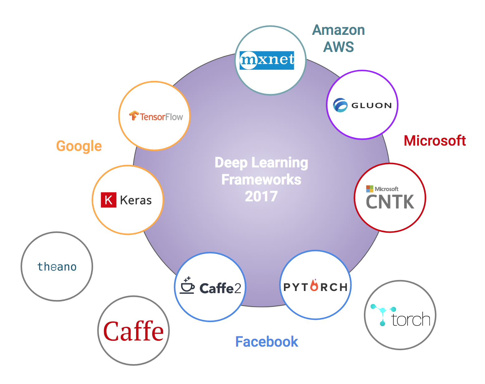
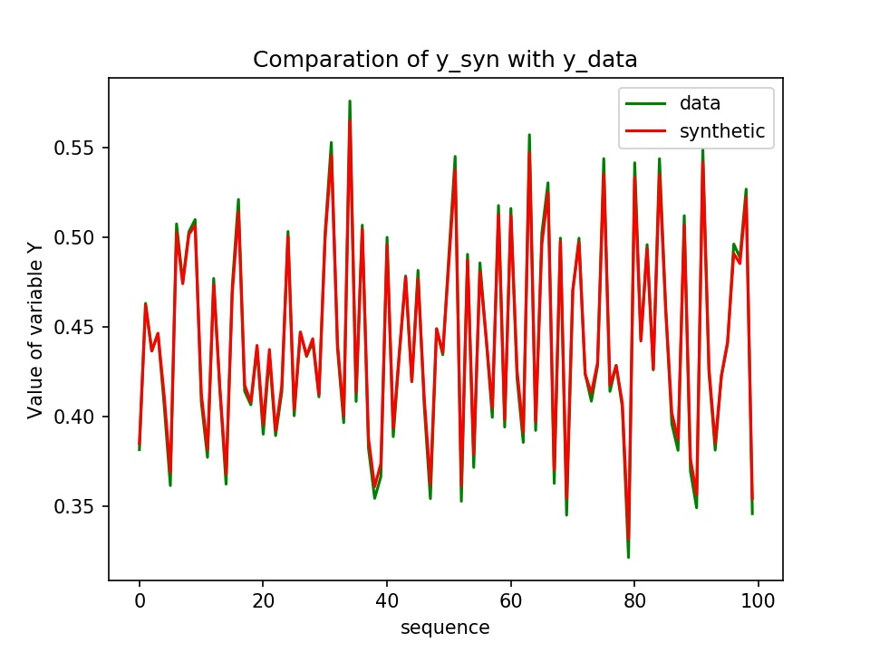
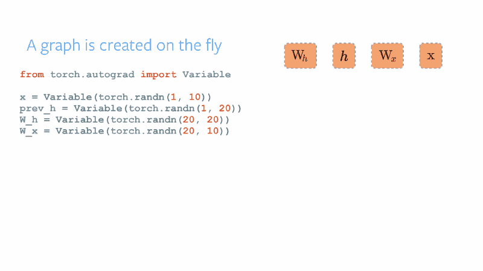

TensorFlow 特性--Graph 和 Sessions
文章目录
深度学习框架有很多，Google的TensorFlow市场占有率居高不下，本文的小目标是说清楚tensorflow的“图（Graph）”和“会话（Session）”机制及其优缺点，最后以一个回归问题为例实践一下。文中顺便回答一下动态图（Dynamic computation graphs）和静态图（Static computational graphs）框架的区别。
背景介绍
深度学习是目前人工智能领域备受推崇的算法种类，其在计算机视觉（Computer vision）、自然语言处理（NLP）领域有比较广泛的应用，这里先挖个坑，下一篇将谈谈我对深度学习算法的理解。
目前开源市场的深度学习框架有很多，如tensorflow、pytorch、mxnet等，而tensorflow的市场占有率相对较高，那么为什么会有如此多的深度学习框架，tensorflow又有什么异于常人的地方呢？为了回答这个问题，本文首先尝试说明一下tensorflow的Graph+Session机制。
市面上的各种深度学习框架：

计算图（Graph）
简单来说，计算图是由tensor和opration组成的一张工程图纸。先上图（从图中来看，这是一个分类问题…），文末还附了一张PyTorch的动态图，有兴趣可以对比一下。

张量（Tensor）
先把力学里面的张量忘掉，这里的张量概念包括标量、矢量和线性算子，或者简单理解成高维矩阵。输入的数据、参数大多是高维矩阵，统一被称为tensor，此外，tensor之间经过各种计算得到的结果依然是一个张量。
- 输入
tf.placeholder - 参数
tf.Variable - 算子
tf.matmul、tf.sqrt()等
算子（Operation）
Tensor之间的各种运算统称为operation，如加减乘除、开根号等。tensor进入operation进行各种计算，输出结果到下一个operation继续计算，像是tensor在流动，TensorFlow由此得名。
会话 （Session）
当tf.graph定义好后，打开一个tf.session执行Graph，简单来说，会话是指机器根据工程图纸打开计算资源进行施工。Session提供了Operation执行和Tensor求值的环境，此外其还拥有物理资源（GPUs和网络连接）。当我们不再需要该session的时候，需要调用sess.close()关闭会话，将这些资源释放。
1 | # Create a default in-process session. |
数据流 （Dataflow）
Dataflow是一个常见的并行计算编程模型。在一个dataflow图中（如上gif图所示），节点表示计算单元，边界则表示计算单元对数据的生产和消费。dataflow模式有几个比较大的优势：
- Parallelism：知道了各个operation之间的依赖关系，系统就可以比较好的使用并行计算了，比如：矩阵相乘可以并行计算、A算子的输入与B算子的输出没有依赖关系也可以并行计算。
- Distributed execution：同样利用每个operation之间的依赖关系，tensorflow好让一些计算被调度到不同机器的多个设备上（CPUs, GPUs, TPUs），tensorflow还会提供必要的机器之间的通信。
- Compilation：tensorflow的 XLA 编译器利用dadaflow图编译更快的机器码。
- Portability：datdaflow图使模型表示是语言无关的。
tf.saved_model保存的模型可以在其他语言中使用，非常便携。
实践 — 回归问题
问题描述
构造一个函数/映射，，其中 是一个随机输入的矩阵，是一个矩阵，由一个参数矩阵 和 点乘后加上一个常数构造出来。
1
2
3
4
5# 使用Numpy生成假数据(phony data),总共100个点.
x_data = np.float32(np.random.rand(2, 100)) # 随机输入
print(x_data)
y_data = np.dot([0.100, 0.200], x_data) + 0.300 #输出的y为[[]]的list
print(y_data)使用和数据来反演/学习出参数矩阵和常量参数，该问题等价于由100个方程求解三个参数问题，显然是一个超定问题，求解过程就是一个优化过程。
假设我们已经知道这个函数式了：$Wx+b=y$，仅仅不知道给定的参数$W$和$b$是什么，根据函数式，可以使用初始化参数来构造$y$，并计算$y$和$y_{data}$之间的“距离”，并使用梯度下降的方式找到一个最优参数组使距离尽量减少。见代码部分10-13行。
注意：
- 现实世界中往往是不知道两个随机变量之间的确切关系的
- 这里”距离”是指向量之间的空间距离，常用的距离有欧几里得距离（2-范数）曼哈顿距离（1-范数）等。本例中使用2-范数作为距离，也即最小方差/最小二乘/Least Square方法。
运行环境
由于tensorflow和cuda版本（9.0.176）兼容问题，选择安装V1.12.0GPU版本，本机tensorflow环境：
1 | [conan@localhost ~]$ conda list | grep tensor |
代码部分
这里使用一个简单的平面拟合问题来实践一下，完整代码请看这里
- 拟合时主要关注的参数为：
tf.train.GradientDescentOptimizer(0.2)里的学习率（或者叫做步长）、和迭代次数for step in range(0, 51):，减小学习率增加迭代次数理论上会使拟合效果更好，但是会有过拟合（over fitting）的危险，并且模型的泛化能力（generalization）会比较差，控制这种风险的算法也很多，比如给目标函数加正则化（regularization）。
1 | # 构造一个线性模型 |
得到的y和y_data的对比：

静态图和动态图
回到最开始的问题，TensorFlow异于常人的地方：其实就是“静态图”框架。引用“hackernoon”上看到的一句话：
TensorFlow is a “Define-and-Run” framework where one would define conditions and iterations in the graph structure whereas in comparison Chainer, DyNet, PyTorch are all “Define-by-Run” frameworks.
动态计算图框架使用起来就像做工程时一边设计一边施工，TensorFlow使用起来就没有“动态图”框架那样灵活、直接，容易调试，而这也是其入门门槛高的一个原因。但是，“静态图”的优点也是明显的—计算会更加高效，因为所有的步骤都定义好了再进行计算使计算机资源的调配更加合理、高效。所以说，“动态图”和“静态图”是优势互补的。
TensorFlow 2.0 推出了Eager Execution，开始支持“动态图”了

Reference
原文作者: Mun*
原文链接: https://kiddie92.github.io/2019/03/02/TensorFlow-特性-Graph-和-Sessions/
许可协议: 知识共享署名-非商业性使用4.0国际许可协议